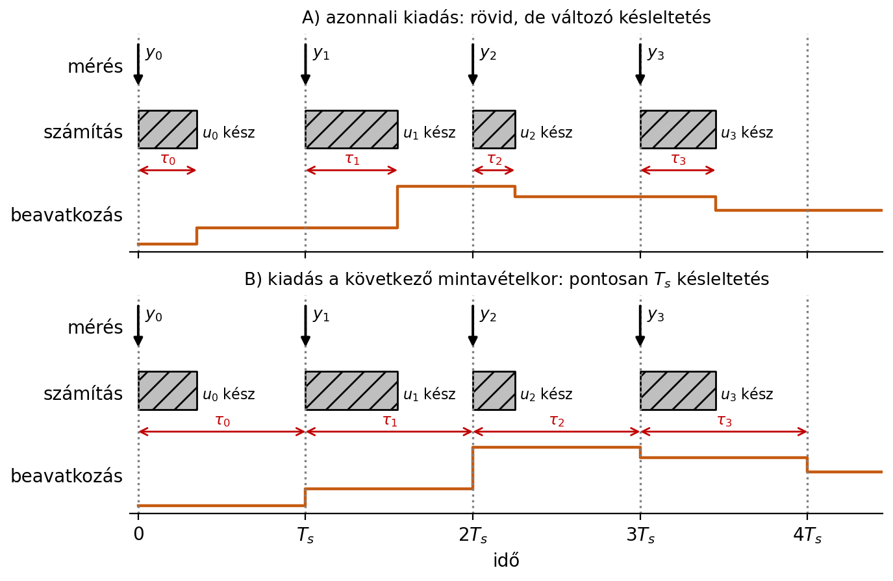
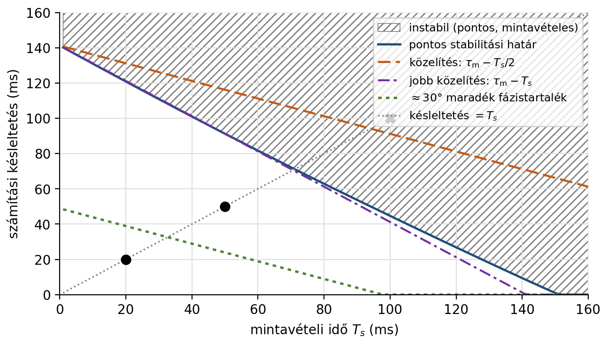

A DC-motor pozíciószabályozója a fejlesztői gépen kifogástalanul működik. Átkerül egy kis vezérlőre, ahol ugyanezen a processzoron fut a kommunikáció és a naplózás is: a motor hirtelen túllő, néha berezeg, a feszültségjel pedig szaggatott. A programkód betűre ugyanaz. Ami megváltozott, az az időzítés: ritkábban mintavételezünk, a számítás később ér véget, a mintavételi pillanatok ingadoznak (jitter), és néha egy minta kimarad.
A Digitális PID-algoritmus megmutatta, mit
számolunk egy lépésben. Most az a kérdés, mikor
számoljuk, és mennyibe kerül a késés. A kísérletekhez a
controlkit.impl motorreferenciáját használjuk:
V/rad,
,
,
s, feszültségkorlát
V. Ez didaktikai hangolás; nem azonos a 1.
záróprojekt: DC-motor pozíciószabályozása tervével. A folytonos
hurok jellemzői:
rad/s,
,
késleltetési tartalék
s.
Egy mintavételes szabályozó minden információja késik. A mérés a mintavételkor készül, a számítás időbe telik, a beavatkozást a nulladrendű tartó (ZOH) a következő frissítésig fenntartja. Két ütemezési minta terjedt el.

Mielőtt tovább olvasol, tippeld meg: a motorhurokban mekkora késleltetést bír ki a szabályozó, ha ms? És ha ms?
A Mintavételezés, átlapolódás és a nulladrendű tartó a mintavételt jelfeldolgozási szempontból vizsgálta. Szabályozásnál a döntő szempont a zárt kör gyorsasága. Két elterjedt ökölszabály (a konstansok forrásonként eltérnek, ellenőrizendő; vö. [S-AW]):
A motorra (alapjelugrás, s) az első 13–39 ms-ot, a második 26–88 ms-ot ad. A két tartomány csak részben fedi egymást: ezek kiindulópontok, nem tételek. A döntést mindig a tartalékok számításával és szimulációval kell ellenőrizni. Túl kis sem ingyenes: a deriválás zaja nő, a fixpontos számításban elveszhetnek a kis növekmények (lásd Kvantálás, fixpontos aritmetika és szűrés), és a processzor terhelése is emelkedik.
A három futó példán ugyanez a gondolatmenet egészen más nagyságrendet ad. A hőkamra SIMC PI-szabályozójánál (lásd Modellillesztés és IMC/SIMC-hangolás) rad/s, így a második szabály – s-ot enged; az s-os mintavétel bőségesen elég, és az ütemező néhány ezredmásodperces pontatlansága észrevehetetlen. A drón magasságtartásánál rad/s, a tartomány kb. – ms; a Digitális PID-algoritmus viszont megmutatta, hogy ms-nál a válasz már láthatóan eltér a folytonostól, ezért a gyakorlatban a tartomány alsó széle alá, – ms-ra érdemes menni. Az ökölszabály felső vége a „még stabil, de látszik” zóna.
A ZOH átvitele alakban írható fel. Helyettesítsünk -t, és emeljünk ki -t:
A második tényező valós és kis -nél közel ; a fázist az első tényező adja. A ZOH tehát úgy viselkedik, mint egy holtidő. Ehhez jön a számítási késleltetés, amely tiszta holtidő. A fázisveszteség a vágási körfrekvencián, radiánban:
Szavakkal: a fázistartalékból annyit veszítünk, amennyit a jel a vágási frekvencián a késés alatt „elfordul”. A Stabilitási tartalékok és a zárt köri frekvenciaválasz szerint a hurok addig stabil, amíg a teljes pótlólagos késés kisebb a késleltetési tartaléknál. A késleltetési tartalék tehát egy keret, amelyből a ZOH, a számítás, a kommunikáció és a szűrők együtt költenek.
A veszteséghez a mérőlánc többi késése is hozzáadódik: az érzékelő szűrője, a buszon továbbított adat, a meghajtó frissítési ideje. Ezeket egy tételes „késleltetési költségvetésben” érdemes vezetni, soronként ezredmásodpercben, és az összeget összevetni -mel. A motorpéldában egy ms-os buszkésés és egy ms időállandójú mérőszűrő együtt kb. ms, azaz további veszteség.
Ez az egyenlet közelítés: a diszkrét integrátor és a deriválás is
késleltet, a hurok pedig nem folytonos. A pontos vizsgálathoz a kör egy
periódusát mátrixszal írjuk le. Állandó
késleltetésnél
()
a perióduson belül a folyamat bemenete
ideig az
,
utána az
érték; a kibővített állapot a folyamat állapotát, a szabályozó állapotát
és a még ki nem adott beavatkozásokat tartalmazza. A kör pontosan akkor
stabil, ha ennek az átmenetmátrixnak minden sajátértéke az egységkörön
belül van (impl.sampled_loop_matrix).

Az ábra meglepő tanulsága: a pontos határ jóval alacsonyabb a becslésnél, és ennél a szabályozónál ms-ig néhány milliszekundumon belül követi a egyenest. A többletet maga a diszkrét szabályozó adja, elsősorban a hátrafelé differenciát használó deriváló tag. ms mellett a szabályozó a vágási körfrekvencián kb. -kal késik a folytonos -hoz képest (a ZOH -a mellett), és az erősítése is kb. -kal nagyobb, ami feljebb tolja a vágást. A két hatás együtt nagyjából még egy fél mintaközt tesz ki. Más szabályozónál az arány más lehet: a képlet optimista alsó becslése a veszteségnek.
Háromféle időzítési hibát különböztetünk meg:
A mintavételi jitter és a mintavesztés ellen van olcsó védekezés: a szabályozó olvassa a mérés időbélyegét (timestamp), és a tényleges mintaközzel integráljon és deriváljon:
A DiscretePID-ben ezt a step(r, y, Ts=h)
hívás valósítja meg. Ha egy minta kimarad, és mégis a névleges
-sel
osztunk, a deriváló tag a két periódus alatti változást egynek hiszi, és
kétszer akkorát rúg. A késleltetés-jitter ellen viszont az időbélyeg nem
segít, mert a számolás pillanatában még nem tudjuk, mikor lép érvénybe a
kimenet. Ott a B minta (állandó késés) a megoldás.
A véletlen jitter stabilitását nem lehet egyetlen -értékkel eldönteni: a rendszer időben változó. Gyakorlati módszer a sok véletlen sorozattal futtatott szimuláció, és a legrosszabb eset megadása. Ez becslés, nem bizonyítás; a legrosszabb állandó késés viszont jó óvatos kapaszkodó.
A motorhurok: rad/s, , s. Legyen ms, és B ütemezés, azaz ms.
Körülbelül ms-os mintavétel tehát még elfogadható. Az óvatosabb, szerinti becslés ms mellett ms tartalékot hagy; a pontos számítás szerint a megengedett állandó késés ms, vagyis a tényleges ms-on felül még ms. A két érték egyezik.
A folytonos tartalékok, a két ökölszabály és a B ütemezés vizsgálata:
import numpy as np
from controlkit import freq, impl, models, sim
from controlkit.tf import TransferFunction as TF
g = impl.MOTOR_PID
C = TF([g["Kp"] * g["Tf"] + g["Kd"], g["Kp"] + g["Ki"] * g["Tf"], g["Ki"]],
[g["Tf"], 1.0, 0.0])
m = freq.margins(models.DCMotor().tf_position() * C)
print(f"w_c = {m.w_c:.3f} rad/s, phi_m = {m.pm:.1f} fok, tau_m = {m.delay_margin:.3f} s")
lo, hi = impl.sampling_range(wc=m.w_c)
print(f"w_c-szabály: T_s = {1000 * lo:.0f} ... {1000 * hi:.0f} ms")
print("T_s=késés veszteség maradék megengedett késés túllövés")
for Ts in (0.01, 0.02, 0.05, 0.1):
loss = impl.phase_loss_deg(m.w_c, Ts, delay=Ts)
res = impl.reference_motor_loop(Ts=Ts, r=0.2, t_end=8.0, delay=Ts)
info = sim.step_info(res.t, res.y, y0=0.0, final=0.2)
d_max = impl.max_stable_delay(Ts)
print(f"{1000 * Ts:6.0f} ms {loss:6.1f}° {m.pm - loss:7.1f}°"
f" {1000 * d_max:12.1f} ms {info.overshoot:9.1f} %")w_c = 5.672 rad/s, phi_m = 45.9 fok, tau_m = 0.141 s
w_c-szabály: T_s = 26 ... 88 ms
T_s=késés veszteség maradék megengedett késés túllövés
10 ms 4.9° 41.0° 131.0 ms 12.3 %
20 ms 9.7° 36.1° 120.9 ms 14.4 %
50 ms 24.4° 21.5° 91.3 ms 33.4 %
100 ms 48.7° -2.9° 44.7 ms 114.1 %A ms sorban a megengedett késés ( ms) kisebb, mint a tényleges ( ms): a kör instabil, noha a képlet csak enyhén negatív tartalékot jelez. A ms-os sorban a túllövés alig tér el a folytonostól.
Az időbélyeg hatása mintavételi jitterrel és mintavesztéssel. Tíz véletlen sorozatot futtatunk (magok: –), ms integrálási lépéssel; a táblázat a beavatkozó jel teljes változását (, a motor és a meghajtó igénybevételének mérőszáma) és a legnagyobb eltérést mutatja az ideális időzítéstől.
base = dict(Ts=0.02, r=0.2, t_end=6.0, h=0.0025)
ideal = impl.reference_motor_loop(**base)
def study(stamp, **timing):
tv, dev = [], []
for seed in range(10):
res = impl.reference_motor_loop(**base, **timing, seed=seed, use_timestamp=stamp)
tv.append(np.sum(np.abs(np.diff(res.uk))))
dev.append(np.max(np.abs(res.y - ideal.y)))
return np.median(tv), max(dev)
print(f"ideális: össz. |du| = {np.sum(np.abs(np.diff(ideal.uk))):.0f} V")
print("hiba időbélyeg össz. |du| (medián, V) max eltérés (rad)")
for name, kw in [("mint. jitter 18 ms", dict(sample_jitter=0.018)),
("20% mintavesztés", dict(drop_prob=0.2)),
("késés-jitter 20 ms", dict(delay_jitter=0.02))]:
for stamp in (False, True):
tv, dev = study(stamp, **kw)
print(f"{name:20s} {'igen' if stamp else 'nem':>6s} {tv:16.0f} {dev:20.4f}")ideális: össz. |du| = 34 V
hiba időbélyeg össz. |du| (medián, V) max eltérés (rad)
mint. jitter 18 ms nem 122 0.0108
mint. jitter 18 ms igen 36 0.0082
20% mintavesztés nem 95 0.0459
20% mintavesztés igen 38 0.0069
késés-jitter 20 ms nem 38 0.0068
késés-jitter 20 ms igen 38 0.0068Mintavételi jitternél és mintavesztésnél az időbélyeg a beavatkozó jel „idegességét” a töredékére csökkenti. A késés-jitter sorai azonosak, ahogy vártuk.
A terv annyit ér, amennyit a feltételezett időzítés teljesül. Három olcsó ellenőrzés:
A mért legrosszabb késést vonjuk le a késleltetési tartalékból, és hagyjunk ráhagyást: a ritka események (megszakítások torlódása, memóriafoglalás) rövid mérésben könnyen kimaradnak.
Egy time.sleep(Ts)-t használó ciklus periódusa a
plusz a számítás ideje plusz az ütemező késése, ezért
az idő elcsúszik. A javítás az abszolút határidő. Az alábbi virtuális
órás szimulációban a számítási idő
–
ms között véletlen (mag:
):
rng = np.random.default_rng(66)
work = rng.uniform(0.002, 0.006, 1000) # számítási idő mintánként (s)
Ts = 0.01
naive = float(np.sum(work + Ts)) # sleep(Ts) a munka után
deadline = 1000 * Ts # abszolút határidőkhöz igazított ciklus
print(f"1000 periódus névleges ideje: {deadline:.2f} s")
print(f"sleep(Ts) ciklus: {naive:.2f} s (csúszás {naive - deadline:.2f} s)")1000 periódus névleges ideje: 10.00 s
sleep(Ts) ciklus: 13.97 s (csúszás 3.97 s)# részlet
import time
next_t = time.monotonic()
last = next_t
while running():
now = time.monotonic()
u = pid.step(r, read_sensor(), Ts=max(now - last, 1e-3)) # időbélyeg
write_actuator(u)
last = now
next_t += Ts # abszolút határidő
time.sleep(max(0.0, next_t - time.monotonic()))Ez a vázlat sem ad kemény valós idejű garanciát. A CPython globális értelmező-zárja (GIL; a szabad szálú változatok viselkedése ellenőrizendő), a szemétgyűjtő és az általános célú operációs rendszer ütemezője tetszőlegesen elhalaszthat egy ébredést. Lassú folyamatnál (a hőkamra s) ez rendszerint nem baj; gyors hurkot (motoráram, drón forgásszabályozása) mikrovezérlőn, hardveres időzítő-megszakításból futtatunk, a mérést és a kiadást lehetőleg hardver indítja. Az ütemezés elméletét az operációs rendszerek tárgya adja; itt csak a következményeivel foglalkozunk. Valódi motoron áramkorlát, vészleállító és felügyelet mellett próbálj bármit.
Továbbvitt eredmény. A mintavételi időt a sávszélességből indulva, a fázisveszteség és a keret szerint választjuk, a pontos (mintavételes) stabilitást és a jittert szimulációval ellenőrizzük, és időbélyeggel dolgozunk. Ezt használja a Kvantálás, fixpontos aritmetika és szűrés, az 1. záróprojekt: DC-motor pozíciószabályozása, a 3. záróprojekt: drón magasságtartása és a 4. záróprojekt: hőmérséklet-szabályozás identifikációval.
A harmadik kísérlet magyarázata: egy futásban a kihagyott minták véletlenül csillapíthatnak is. Az időbélyeg a szabályozó szándékolt viselkedését állítja helyre, az pedig itt – közötti túllövés, a mintakiesés pillanatától függően.
sleep(Ts) a számítás után. →
Javítás: abszolút határidő, a túllépések
számlálása.max_stable_delay függvénnyel a megengedett késést
ms-ra, és vesd össze a
és a
becsléssel.A mintavételi időt a zárt kör gyorsaságából választjuk (10–30 minta az emelkedési időre, illetve –; ellenőrizendő ökölszabályok). A ZOH körülbelül , a számítás holtidőt ad: , a keret a késleltetési tartalék; a diszkrét deriválás további késést hozhat, ezért a pontos stabilitást mintavételes modellel ellenőrizzük. Az azonnali kiadás kisebb, de ingadozó, a következő mintás kiadás nagyobb, de állandó késést ad. A mintavételi jitter és a mintavesztés ellen az időbélyeg, a késés-jitter ellen az állandó ütemezés segít. Pythonban abszolút határidőkkel kerülhető el a ciklus elcsúszása, de kemény valós idejű garancia nincs; a gyors hurkok időzítő-megszakításból, beágyazott eszközön futnak. A valódi rendszeren a késést és a jittert mérni kell. Továbbvitt eredmény: a mintavételi idő és a késleltetés kezelése a Kvantálás, fixpontos aritmetika és szűrés, 1. záróprojekt: DC-motor pozíciószabályozása, 3. záróprojekt: drón magasságtartása és 4. záróprojekt: hőmérséklet-szabályozás identifikációval alapja.
rad , a maradék kb. .
ms és ms között.
A megengedett veszteség rad , ebből ms.
A: átlagos késés ms, rad . B: rad . A B minta fázisban drágább, de állandó.
print("T_s pontos tau_m - T_s/2 tau_m - T_s (ms)")
for Ts in (0.01, 0.03, 0.06):
exact = 1000 * impl.max_stable_delay(Ts)
a, b = 1000 * (m.delay_margin - Ts / 2), 1000 * (m.delay_margin - Ts)
print(f"{1000 * Ts:3.0f} {exact:8.1f} {a:13.1f} {b:12.1f}")T_s pontos tau_m - T_s/2 tau_m - T_s (ms)
10 131.0 136.2 131.2
30 110.9 126.2 111.2
60 81.7 111.2 81.2A pontos határ mindhárom esetben néhány tized ezredmásodpercen belül a becslésnél van.
Késés-jitternél a mintavételek egyenközűek, minden periódus lefut, így a mérések közötti idő pontosan : az időbélyegből számolt megegyezik a névlegessel. A zavar a kiadás időpontjában van, amelyet a szabályozó a számolás pillanatában nem ismer.